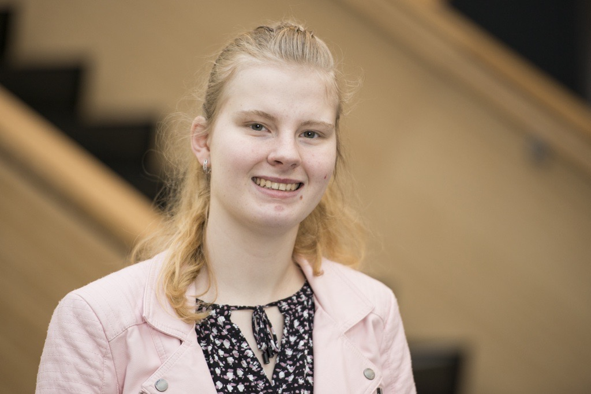

Wat zijn mijn hobby's?
ik ben gek op borduren, naaien, haken en natuurlijk schilderen.


ik ben gek op borduren, naaien, haken en natuurlijk schilderen.
naam: Alyssa Sikma
tel:0629844061
naam: Krijn Kraaieveld
tel:0622502041
naam:Rene Bijker
tel:+31102489339